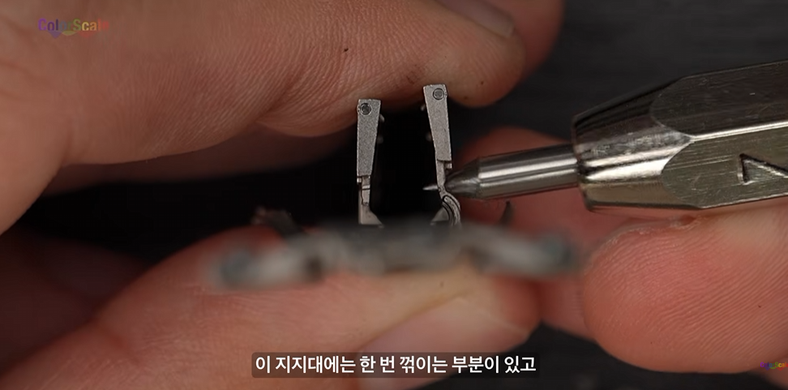
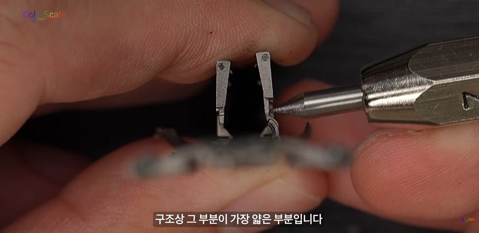
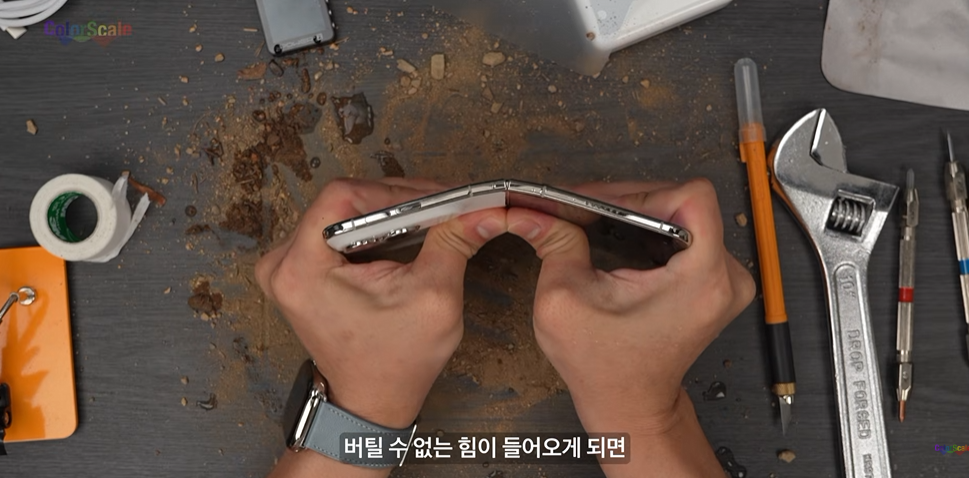
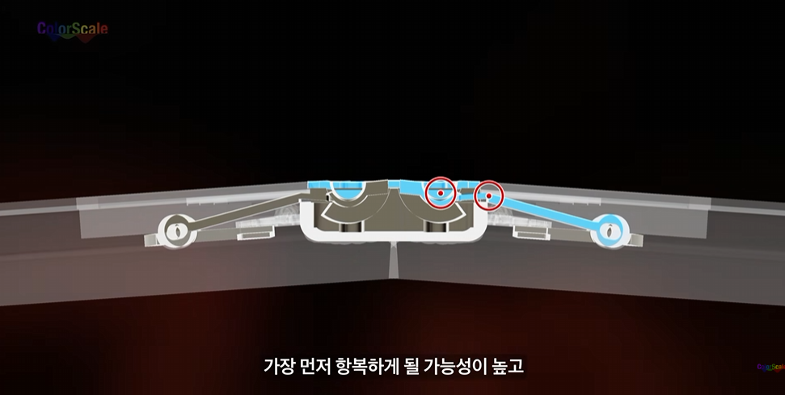
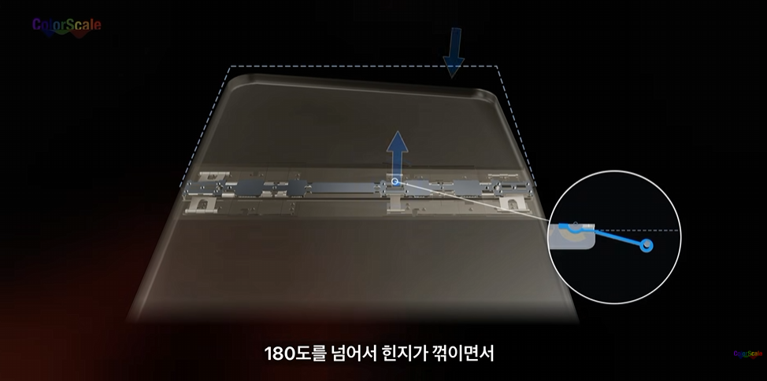
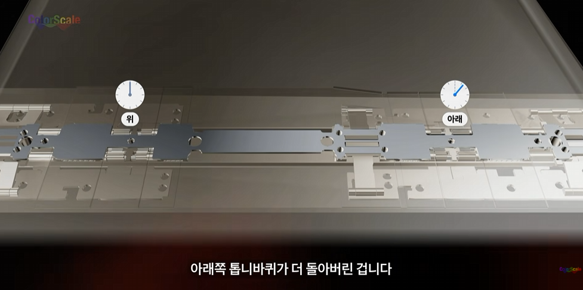
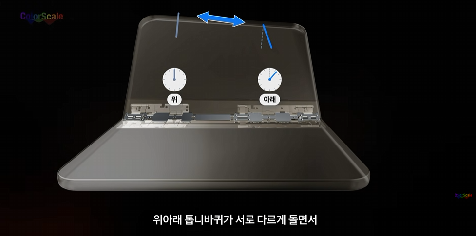
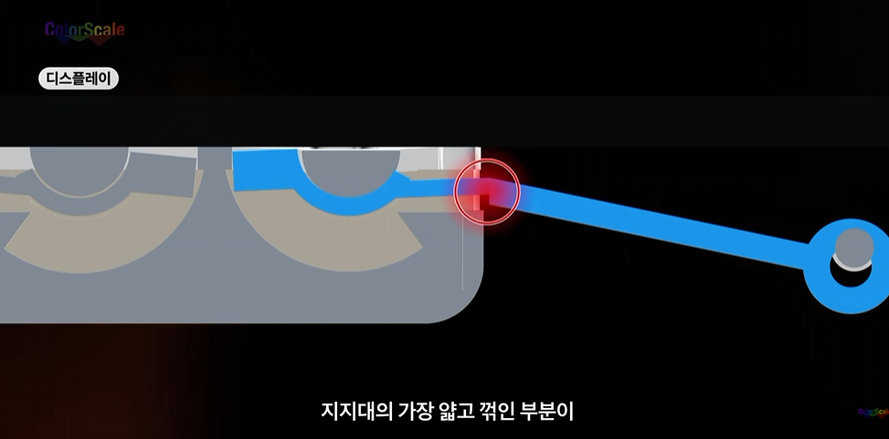
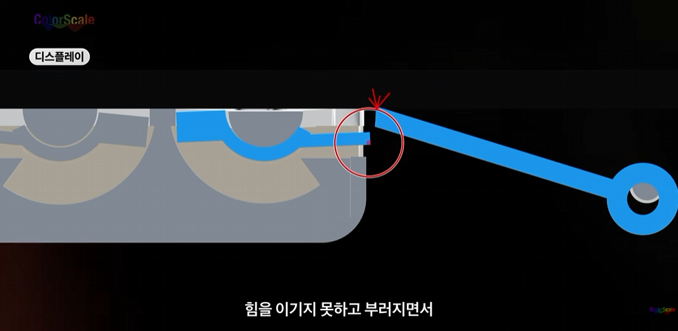
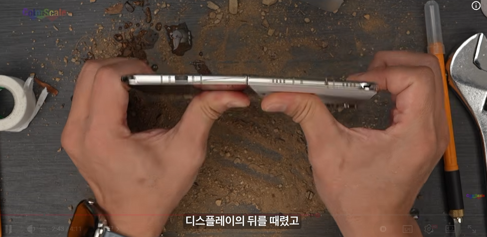
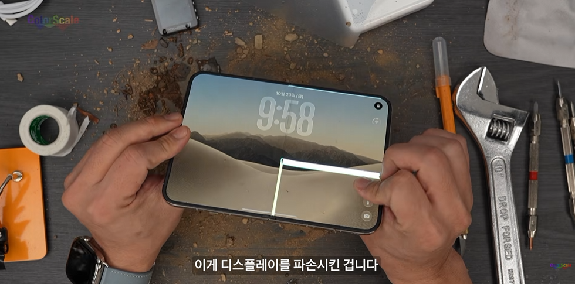
*내가 잘라온 부분은 180도를 넘는 힘을 가했을 때 크랙이 발생하게 된 원인을 분석한거고
정상적으로 사용했는데도 크랙이 발생한 경우는 제조 단계에서 부터 톱니바퀴가 제대로 조립되지 않은것 같다고 함
일단 어디까지나 예상이긴한데
3D모델링 같은걸로 분석해주니까 좀 이해하기 쉬운거 같아서 가져옴
근데 저렇게 누르는 정도의 충격으로 파손되는거면 그냥 한쪽 잡고 털듯이 펼치는거 몇번만 해도 그정도 충격은 누적될걸 ㅋㅋ